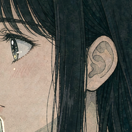

—
今天
—

—
今天
0/0
每日任务
›
0
待办没做
›
¥0
今天花的
›
喝水
0/5
一句话记下来
记
每天都要做的
0/0
加
勾上就算今天做了。第二天自动归零，不用手动清。
待办 · 你说的，我记着
加
这里只放你说过的事。你也可以直接跟我说一句，我给你推上来。
记一笔
今天 ¥0
记
这个月
¥0
按月汇总，一行一天，点「删」清掉当天全部。
给爸的消息
长按复制，自己发。发不发、什么时候发，你定。
这台手机上的数据
同步状态
—
云端版本
—
导出全部数据
导出
数据存在这台手机上；云端只有加密备份。换手机或清缓存前先导出一份。
装到手机桌面
安卓 / 华为：浏览器菜单 →「添加到主屏幕」或「安装应用」。
iPhone：Safari 底部「分享」→「添加到主屏幕」。
装好后点桌面图标直接全屏打开，没有地址栏，断网也能看。
今天
每日任务
待办
记账
更多